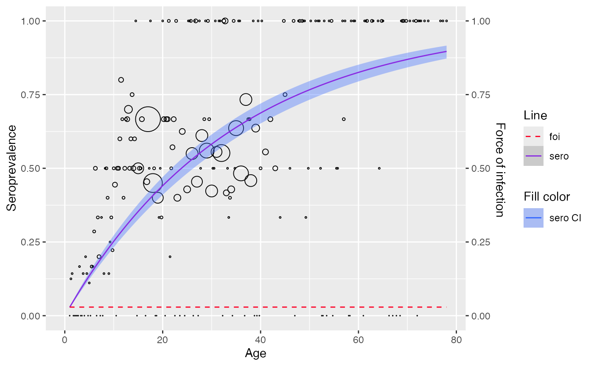
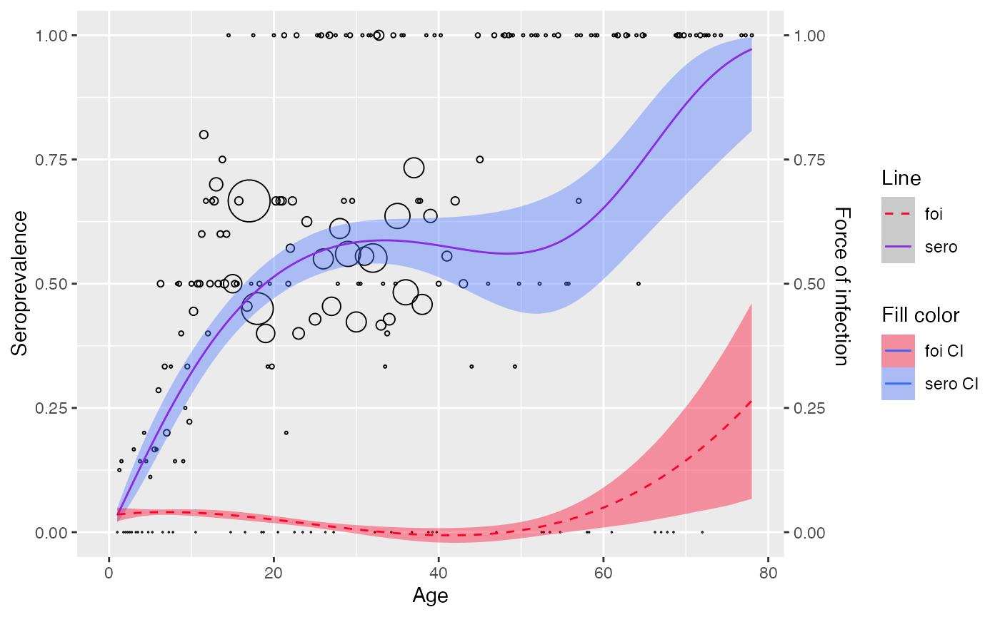
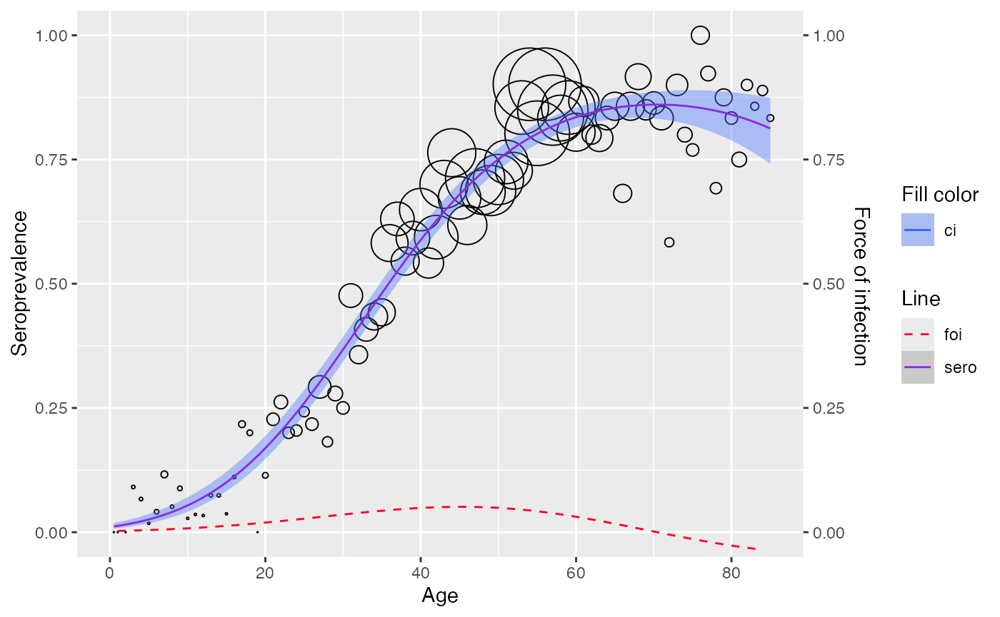
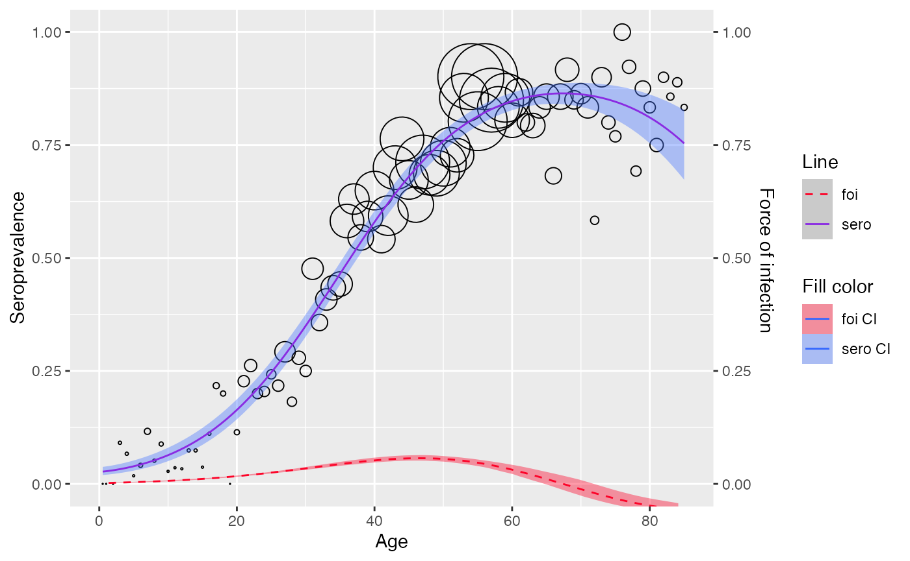
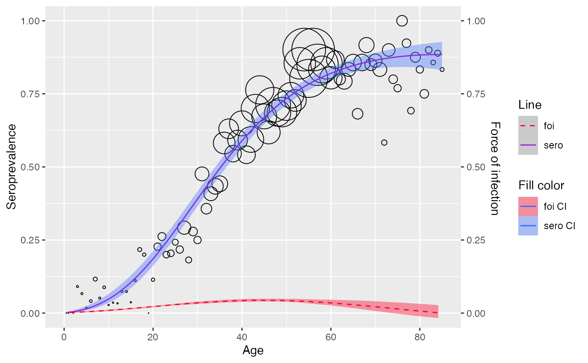
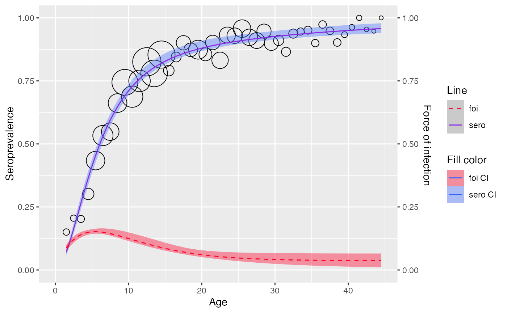
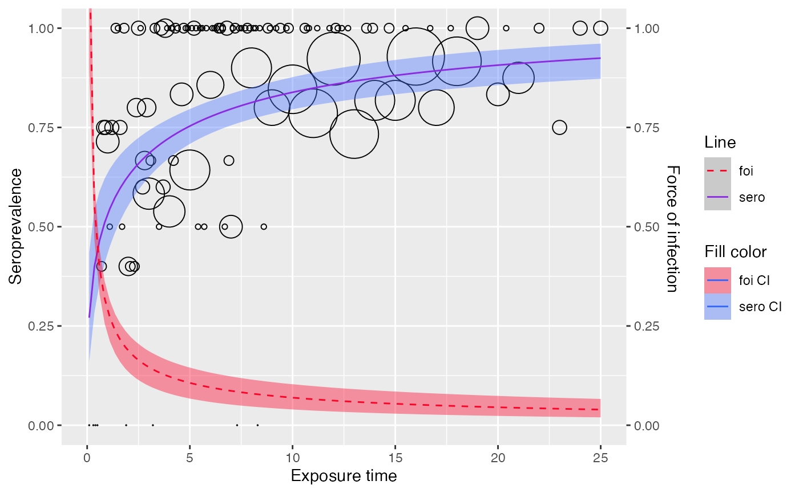
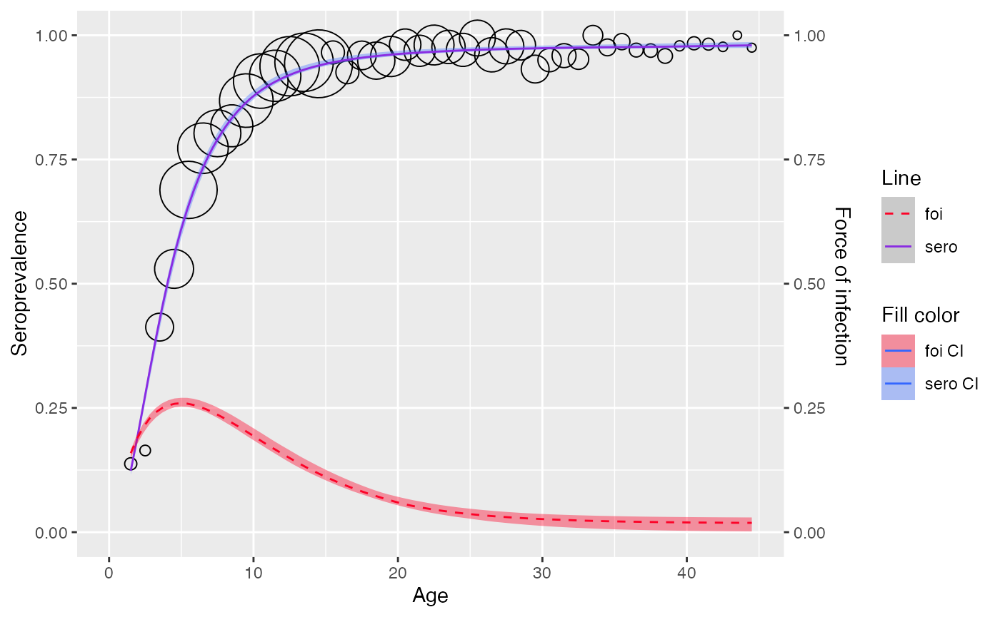
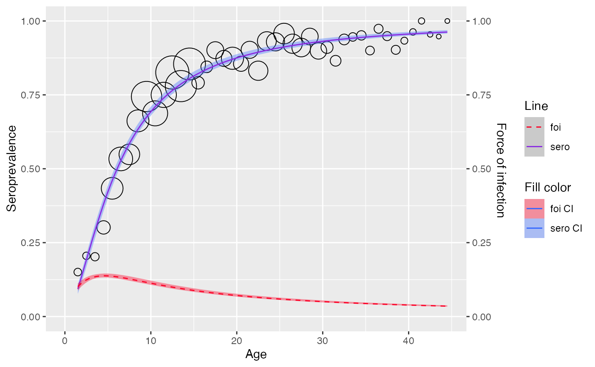

Frequentist methods
Polynomial models
Seroprevalence is modeled using the following serocatalytic model
\[ \pi(a) = 1 - \text{exp}({-\Sigma_{i=1}^k \beta_i a^i}) \]
Where:
\(a\) is the variable age
\(\pi\) is the seroprevalence of the population at age \(a\)
\(k\) is the degree of the polynomial
\(\beta_i\) are the model parameters
Which implies the force of infection is \(\lambda(a) = \Sigma_{i=1}^k \beta_i i a^{i-1}\)
This generalization encompasses several classical serocatalytic model including
Muench model (assuming \(k=1\)) (Muench 1934)
Griffith model (assuming \(k = 2\))
Grenfell and Anderson model (assuming higher degree \(k\)) (Grenfell and Anderson 1985)
Refer to Chapter 6.1.1 of the book by Hens et al. (2012)
for a more detailed explanation of the methods.
Fitting data
We will use the Parvo B19 data from Finland 1997–1998
for this example.
data <- parvob19_fi_1997_1998[order(parvob19_fi_1997_1998$age), ]To fit a polynomial model, use the polynomial_model()
function.
# Fit a Muench model
muench <- polynomial_model(data, k = 1, status_col="seropositive")
summary(muench$info)
#>
#> Call:
#> glm(formula = Age(k), family = binomial(link = link), data = df)
#>
#> Coefficients:
#> Estimate Std. Error z value Pr(>|z|)
#> age -0.029088 0.001375 -21.15 <2e-16 ***
#> ---
#> Signif. codes: 0 '***' 0.001 '**' 0.01 '*' 0.05 '.' 0.1 ' ' 1
#>
#> (Dispersion parameter for binomial family taken to be 1)
#>
#> Null deviance: Inf on 1117 degrees of freedom
#> Residual deviance: 1366.9 on 1116 degrees of freedom
#> AIC: 1368.9
#>
#> Number of Fisher Scoring iterations: 6
plot(muench, foi_ci=FALSE) # specify whether to plot CI of FOI via foi_ci
The users can also choose to provide a range of values for \(k\) in which case the package will try to find the best \(k\) parameter determined by Loglikelihood Ratio test (LRT)
# Provide a range of values for k
best_param <- polynomial_model(data, k = 1:5, status_col = "seropositive")
plot(best_param, foi_ci = TRUE)
# View the best model here which suggests k = 4 is the best parameter value
best_param
#> Polynomial model
#>
#> Input type: linelisting
#> Degree (k): 4
#>
#> Call: glm(formula = Age(k), family = binomial(link = link), data = df)
#>
#> Coefficients:
#> age I(age^2) I(age^3) I(age^4)
#> -3.381e-02 -9.950e-04 5.551e-05 -5.737e-07
#>
#> Degrees of Freedom: 1117 Total (i.e. Null); 1113 Residual
#> Null Deviance: Inf
#> Residual Deviance: 1336 AIC: 1344Fractional polynomial model
Proposed model
Fractional polynomial model generalize conventional polynomial class of functions. In the context of binary responses, a fractional polynomial of degree \(m\) for the linear predictor is defined as followed
\[ \eta_m(a, \beta, p_1, p_2, ...,p_m) = \Sigma^m_{i=0} \beta_i H_i(a) \]
Where \(m\) is an integer, \(p_1 \le p_2 \le... \le p_m\) is a sequence of powers, and \(H_i(a)\) is a transformation given by
\[ H_i = \begin{cases} a^{p_i} & \text{ if } p_i \neq p_{i-1}, \\ H_{i-1}(a) \times log(a) & \text{ if } p_i = p_{i-1}, \end{cases} \]
Refer to Chapter 6.2 of the book by Hens et al. (2012)
for a more detailed explanation of the methods.
Fitting data
Use fp_model() to fit a fractional polynomial model.
The parameter p specifies the powers of each polynomial
term (length of p is thus the model’s degree)
hav <- hav_be_1993_1994
model <- fp_model(hav, p=c(1, 1.5), link="cloglog")
model
#> Fractional polynomial model
#>
#> Input type: aggregated
#> Powers: 1, 1.5
#>
#> Call: glm(formula = as.formula(formulate(p)), family = binomial(link = link))
#>
#> Coefficients:
#> (Intercept) I(age^1) I(age^1.5)
#> -4.56685 0.22340 -0.01775
#>
#> Degrees of Freedom: 85 Total (i.e. Null); 83 Residual
#> Null Deviance: 1320
#> Residual Deviance: 85.81 AIC: 365.4
plot(model, foi_ci=TRUE)
#> Running nonparametric bootstrap for FoI confidence intervals, this may take a while
The users can also tell the package to perform parameter selection by
providing p as a named list with 2 elements:
-
degreethe maximum number of terms to search over -
p_rangethe possible powers for each term
model <- fp_model(hav,
p=list(
p_range=seq(-2,3,0.1),
degree=2
),
monotonic=FALSE,
link="cloglog")
plot(model, foi_ci=TRUE)
#> Running nonparametric bootstrap for FoI confidence intervals, this may take a while
# the best set of powers for this dataset is 1.5 and 1.6
model
#> Fractional polynomial model
#>
#> Input type: aggregated
#> Powers: 1.5, 1.6
#>
#> Call: glm(formula = as.formula(formulate(curr_p)), family = binomial(link = link))
#>
#> Coefficients:
#> (Intercept) I(age^1.5) I(age^1.6)
#> -3.61083 0.12443 -0.07656
#>
#> Degrees of Freedom: 85 Total (i.e. Null); 83 Residual
#> Null Deviance: 1320
#> Residual Deviance: 81.6 AIC: 361.2To restrict the parameters search such that the predictions are
monotonic (thus ensuring the FOI to be \(\lambda \geq 0\)) set
monotonic=TRUE
# ---- Best model with the monotonic constraint -----
model <- fp_model(hav,
p=list(
p_range=seq(-2,3,0.1),
degree=2
),
monotonic=TRUE,
link="cloglog")
plot(model, foi_ci=TRUE)
#> Running nonparametric bootstrap for FoI confidence intervals, this may take a while
# the best set of powers with the monotonic constraint is 0.5 and 1.1
model
#> Fractional polynomial model
#>
#> Input type: aggregated
#> Powers: 0.5, 1.1
#>
#> Call: glm(formula = as.formula(formulate(curr_p)), family = binomial(link = link))
#>
#> Coefficients:
#> (Intercept) I(age^0.5) I(age^1.1)
#> -7.64170 1.67492 -0.05304
#>
#> Degrees of Freedom: 85 Total (i.e. Null); 83 Residual
#> Null Deviance: 1320
#> Residual Deviance: 106 AIC: 385.5Nonlinear models
Farrington model
Proposed model
For Farrington’s model, the force of infection was defined non-negative for all a \(\lambda(a) \geq 0\) and increases to a peak in a linear fashion followed by an exponential decrease
\[ \lambda(a) = (\alpha a - \gamma)e^{-\beta a} + \gamma \]
Where \(\gamma\) is called the long term residual for FOI, as \(a \rightarrow \infty\) , \(\lambda (a) \rightarrow \gamma\)
Integrating \(\lambda(a)\) would results in the following non-linear model for prevalence
\[ \pi (a) = 1 - e^{-\int_0^a \lambda(s) ds} \\ = 1 - exp\{ \frac{\alpha}{\beta}ae^{-\beta a} + \frac{1}{\beta}(\frac{\alpha}{\beta} - \gamma)(e^{-\beta a} - 1) -\gamma a \} \]
Refer to Chapter 6.1.2 of the book by Hens et al. (2012)
for a more detailed explanation of the methods.
Fitting data
Use farrington_model() to fit a
Farrington’s model.
farrington_md <- farrington_model(
rubella_uk_1986_1987,
start=list(alpha=0.07,beta=0.1,gamma=0.03)
)
farrington_md
#> Farrington model
#>
#> Input type: aggregated
#>
#> Call:
#> mle(minuslogl = farrington, start = start, fixed = fixed)
#>
#> Coefficients:
#> alpha beta gamma
#> 0.07034904 0.20243950 0.03665599
plot(farrington_md, foi_ci=TRUE)
Weibull model
Proposed model
For a Weibull model, the prevalence is given by
\[ \pi (a) = 1 - e^{ - \beta_0 a ^ {\beta_1}} \]
Where \(a\) is the age, which may refer to biological age or a time scale of interest (e.g., time since vaccination).
The model was reformulated as a GLM model with log - log link and linear predictor using \(log(a)\)
\[\eta(a) = log(\beta_0) + \beta_1 log(a)\]
Thus implies that the force of infection is a monotone function of the age as followed
\[ \lambda(a) = \beta_0 \beta_1 a^{\beta_1 - 1} \]
Refer to Chapter 6.1.2 of the book by Hens et al. (2012)
for a more detailed explanation of the methods.
Fitting data
Use weibull_model() to fit a Weibull model.
hcv <- hcv_be_2006[order(hcv_be_2006$dur), ]
wb_md <- hcv %>% weibull_model(age_col = "dur", status_col="seropositive")
wb_md
#> Weibull model
#>
#> Input type: linelisting
#> b0=-0.276, b1=0.3807
#>
#> Call: glm(formula = spos ~ log(age), family = binomial(link = "cloglog"))
#>
#> Coefficients:
#> (Intercept) log(age)
#> -0.2760 0.3807
#>
#> Degrees of Freedom: 420 Total (i.e. Null); 419 Residual
#> Null Deviance: 452.1
#> Residual Deviance: 419.4 AIC: 423.4
plot(wb_md) 
Bayesian methods
Proposed approach
Consider a model for prevalence that has a parametric form \(\pi(a_i, \alpha)\) where \(\alpha\) is a parameter vector
One can constraint the parameter space of the prior distribution \(P(\alpha)\) in order to achieve the desired monotonicity of the posterior distribution \(P(\pi_1, \pi_2, ..., \pi_m|y,n)\)
Where:
\(n = (n_1, n_2, ..., n_m)\) and \(n_i\) is the sample size at age \(a_i\)
\(y = (y_1, y_2, ..., y_m)\) and \(y_i\) is the number of infected individual from the \(n_i\) sampled subjects
Farrington
Proposed model
The model for prevalence is as followed
\[ \pi (a) = 1 - exp\{ \frac{\alpha_1}{\alpha_2}ae^{-\alpha_2 a} + \frac{1}{\alpha_2}(\frac{\alpha_1}{\alpha_2} - \alpha_3)(e^{-\alpha_2 a} - 1) -\alpha_3 a \} \]
For likelihood model, independent binomial distribution are assumed for the number of infected individuals at age \(a_i\)
\[ y_i \sim Bin(n_i, \pi_i), \text{ for } i = 1,2,3,...m \]
The constraint on the parameter space can be incorporated by assuming truncated normal distribution for the components of \(\alpha\), \(\alpha = (\alpha_1, \alpha_2, \alpha_3)\) in \(\pi_i = \pi(a_i,\alpha)\)
\[ \alpha_j \sim \text{truncated } \mathcal{N}(\mu_j, \tau_j), \text{ } j = 1,2,3 \]
The joint posterior distribution for \(\alpha\) can be derived by combining the likelihood and prior as followed
\[ P(\alpha|y) \propto \prod^m_{i=1} \text{Bin}(y_i|n_i, \pi(a_i, \alpha)) \prod^3_{i=1}-\frac{1}{\tau_j}\text{exp}(\frac{1}{2\tau^2_j} (\alpha_j - \mu_j)^2) \]
-
Where the flat hyperprior distribution is defined as followed:
\(\mu_j \sim \mathcal{N}(0, 10000)\)
\(\tau^{-2}_j \sim \Gamma(100,100)\)
The full conditional distribution of \(\alpha_i\) is thus \[ P(\alpha_i|\alpha_j,\alpha_k, k, j \neq i) \propto -\frac{1}{\tau_i}\text{exp}(\frac{1}{2\tau^2_i} (\alpha_i - \mu_i)^2) \prod^m_{i=1} \text{Bin}(y_i|n_i, \pi(a_i, \alpha)) \]
Refer to Chapter 10.3.1 of the book by Hens et al. (2012)
for a more detailed explanation of the method.
Fitting data
To fit Farrington model, use
hierarchical_bayesian_model() and define
type = "far2" or type = "far3" where
type = "far2"refers to Farrington model with 2 parameters (\(\alpha_3 = 0\))type = "far3"refers to Farrington model with 3 parameters (\(\alpha_3 > 0\))
df <- mumps_uk_1986_1987
model <- hierarchical_bayesian_model(df, type="far3")
#>
#> SAMPLING FOR MODEL 'fra_3' NOW (CHAIN 1).
#> Chain 1: Rejecting initial value:
#> Chain 1: Log probability evaluates to log(0), i.e. negative infinity.
#> Chain 1: Stan can't start sampling from this initial value.
#> Chain 1: Rejecting initial value:
#> Chain 1: Log probability evaluates to log(0), i.e. negative infinity.
#> Chain 1: Stan can't start sampling from this initial value.
#> Chain 1: Rejecting initial value:
#> Chain 1: Log probability evaluates to log(0), i.e. negative infinity.
#> Chain 1: Stan can't start sampling from this initial value.
#> Chain 1:
#> Chain 1: Gradient evaluation took 0.000114 seconds
#> Chain 1: 1000 transitions using 10 leapfrog steps per transition would take 1.14 seconds.
#> Chain 1: Adjust your expectations accordingly!
#> Chain 1:
#> Chain 1:
#> Chain 1: Iteration: 1 / 5000 [ 0%] (Warmup)
#> Chain 1: Iteration: 500 / 5000 [ 10%] (Warmup)
#> Chain 1: Iteration: 1000 / 5000 [ 20%] (Warmup)
#> Chain 1: Iteration: 1500 / 5000 [ 30%] (Warmup)
#> Chain 1: Iteration: 1501 / 5000 [ 30%] (Sampling)
#> Chain 1: Iteration: 2000 / 5000 [ 40%] (Sampling)
#> Chain 1: Iteration: 2500 / 5000 [ 50%] (Sampling)
#> Chain 1: Iteration: 3000 / 5000 [ 60%] (Sampling)
#> Chain 1: Iteration: 3500 / 5000 [ 70%] (Sampling)
#> Chain 1: Iteration: 4000 / 5000 [ 80%] (Sampling)
#> Chain 1: Iteration: 4500 / 5000 [ 90%] (Sampling)
#> Chain 1: Iteration: 5000 / 5000 [100%] (Sampling)
#> Chain 1:
#> Chain 1: Elapsed Time: 16.021 seconds (Warm-up)
#> Chain 1: 5.657 seconds (Sampling)
#> Chain 1: 21.678 seconds (Total)
#> Chain 1:
model
#> Hierarchical Bayesian model
#>
#> Input type: aggregated
#> Model: Farrington model with 3 parameters
#>
#> Fitted parameters:
#> alpha1 = 0.1401 (95% CrI [0.1298, 0.1491], sd = 0.004496)
#> alpha2 = 0.204 (95% CrI [0.186, 0.2139], sd = 0.009942)
#> alpha3 = 0.01322 (95% CrI [0.0003391, 0.02911], sd = 0.008794)
plot(model)
Log-logistic
Proposed approach
The model for seroprevalence is as followed
\[ \pi(a) = \frac{\beta a^\alpha}{1 + \beta a^\alpha}, \text{ } \alpha, \beta > 0 \]
The likelihood is specified to be the same as Farrington model (\(y_i \sim Bin(n_i, \pi_i)\)) with
\[ \text{logit}(\pi(a)) = \alpha_2 + \alpha_1\log(a) \]
- Where \(\alpha_2 = \text{log}(\beta)\)
The prior model of \(\alpha_1\) is specified as \(\alpha_1 \sim \text{truncated } \mathcal{N}(\mu_1, \tau_1)\) with flat hyperprior as in Farrington model
\(\beta\) is constrained to be positive by specifying \(\alpha_2 \sim \mathcal{N}(\mu_2, \tau_2)\)
The full conditional distribution of \(\alpha_1\) is thus
\[ P(\alpha_1|\alpha_2) \propto -\frac{1}{\tau_1} \text{exp} (\frac{1}{2 \tau_1^2} (\alpha_1 - \mu_1)^2) \prod_{i=1}^m \text{Bin}(y_i|n_i,\pi(a_i, \alpha_1, \alpha_2) ) \]
And \(\alpha_2\) can be derived in the same way
Refer to Chapter 10.3.3 of the book by Hens et al. (2012)
for a more detailed explanation of the method.
Fitting data
To fit Log-logistic model, use
hierarchical_bayesian_model() and define
type = "log_logistic"
df <- rubella_uk_1986_1987
model <- hierarchical_bayesian_model(df, type="log_logistic")
#>
#> SAMPLING FOR MODEL 'log_logistic' NOW (CHAIN 1).
#> Chain 1:
#> Chain 1: Gradient evaluation took 5.1e-05 seconds
#> Chain 1: 1000 transitions using 10 leapfrog steps per transition would take 0.51 seconds.
#> Chain 1: Adjust your expectations accordingly!
#> Chain 1:
#> Chain 1:
#> Chain 1: Iteration: 1 / 5000 [ 0%] (Warmup)
#> Chain 1: Iteration: 500 / 5000 [ 10%] (Warmup)
#> Chain 1: Iteration: 1000 / 5000 [ 20%] (Warmup)
#> Chain 1: Iteration: 1500 / 5000 [ 30%] (Warmup)
#> Chain 1: Iteration: 1501 / 5000 [ 30%] (Sampling)
#> Chain 1: Iteration: 2000 / 5000 [ 40%] (Sampling)
#> Chain 1: Iteration: 2500 / 5000 [ 50%] (Sampling)
#> Chain 1: Iteration: 3000 / 5000 [ 60%] (Sampling)
#> Chain 1: Iteration: 3500 / 5000 [ 70%] (Sampling)
#> Chain 1: Iteration: 4000 / 5000 [ 80%] (Sampling)
#> Chain 1: Iteration: 4500 / 5000 [ 90%] (Sampling)
#> Chain 1: Iteration: 5000 / 5000 [100%] (Sampling)
#> Chain 1:
#> Chain 1: Elapsed Time: 4.47 seconds (Warm-up)
#> Chain 1: 2.443 seconds (Sampling)
#> Chain 1: 6.913 seconds (Total)
#> Chain 1:
model
#> Hierarchical Bayesian model
#>
#> Input type: aggregated
#> Model: Log-logistic model
#>
#> Fitted parameters:
#> alpha1 = 1.633 (95% CrI [1.551, 1.743], sd = 0.0475)
#> alpha2 = -2.944 (95% CrI [-3.198, -2.753], sd = 0.1082)
plot(model)